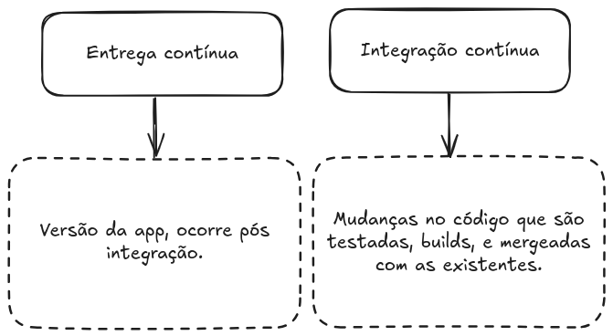

Encontro 07 — CI/CD com GitHub Actions¶
Duração: 2h
Bloco: Projeto Prático 2
Projeto associado: projeto-2-ec2-flask-cicd/
Objetivos do Encontro¶
- Entender o conceito de CI/CD e sua importância
- Configurar o pipeline do Projeto 2 (GitHub Actions)
- Realizar um deploy end-to-end automatizado: push → build → EC2
- Entender secrets e segurança em pipelines
Roteiro (2h)¶
| Tempo | Atividade |
|---|---|
| 0:00 – 0:10 | Revisão + dúvidas |
| 0:10 – 0:40 | Exposição: CI/CD — conceitos e ferramentas |
| 0:40 – 1:00 | Walkthrough do deploy.yml do Projeto 2 |
| 1:00 – 1:50 | Laboratório: configurar secrets + primeiro deploy automático |
| 1:50 – 2:00 | Síntese e revisão do Projeto 2 |
Conteúdo Expositivo¶
7.1 CI vs. CD¶
| Sigla | Nome | O que faz |
|---|---|---|
| CI | Continuous Integration | Build + testes automáticos a cada push |
| CD | Continuous Delivery | Artefato sempre pronto para deploy (manual) |
| CD | Continuous Deployment | Deploy automático em produção a cada push |
CI/CD - Detecta erros cedo (antes de chegar em produção) - Elimina deploys manuais propensos a erro - Feedback rápido para o desenvolvedor - Histórico auditável de cada deploy
O que é?¶
GitHub Actions é uma plataforma de integração e entrega contínua (CI/CD) que permite automatizar a sua compilação, testar e integrar sua pipeline de implantação. É possível criar fluxos de trabalho que criam e testam cada pull request no seu repositório, ou implantar pull requests mesclados em produção.
CI/CD¶

Visualizando¶
 De maneira geral podemos seguir essa seguinte estrutura.
De maneira geral podemos seguir essa seguinte estrutura.
O que compõe github actions¶

Como é configurada?¶

Exemplo da action utilizada para servir esse material: https://github.com/uiuqM/treinamento-devops-aws-iac-epic/blob/main/.github/workflows/main.yaml
Visualizando¶

Events (Workflow triggers)¶
| Relacionado ao repositório | Outros |
|---|---|
| push (commit) | workflow_dispatch (trigger manual) |
| pull_request (opened, closed...) | repository_dispatch (REST API) |
| create (branch ou tag) | scheduled (Workflow agendado) |
| fork (repo teve fork) | workflow_call (Chamado por outros workflows) |
| issues (issue aberta, deletada....) | |
| issues_comment (issue ou PR comment) | |
| watch (repo favoritado) | |
| discussion (dicussion criada, deletada ...) | |
| .... |
Job runners¶

Actions¶
Uma aplicação que performa uma tarefa (complexa) repetitiva.
Exemplos: https://github.com/actions/checkout https://github.com/marketplace?type=actions
7.2 GitHub Actions — Estrutura¶
name: Nome do Workflow
on:
push:
branches: [main]
jobs:
nome-do-job:
runs-on: ubuntu-latest
steps:
- name: Checkout
uses: actions/checkout@v4
- name: Passo customizado
run: echo "Olá do pipeline!"
7.3 Secrets no GitHub Actions¶
Nunca coloque credenciais diretamente no YAML. Use Secrets:
# No YAML: referencie com ${{ secrets.NOME }}
- name: Deploy via SSH
uses: appleboy/ssh-action@v1.0.0
with:
host: ${{ secrets.EC2_HOST }}
key: ${{ secrets.EC2_SSH_KEY }}
Configurar em: GitHub → Repo → Settings → Secrets and variables → Actions
8.4 Walkthrough do deploy.yml¶
name: CI/CD — Build e Deploy em EC2
on:
push:
branches: [main]
jobs:
build-and-deploy:
runs-on: ubuntu-latest
steps:
- uses: actions/checkout@v4
- name: Build da imagem Docker
run: docker build -t flask-iac-app ./app
- name: Deploy na EC2
uses: appleboy/ssh-action@v1.0.0
with:
host: ${{ secrets.EC2_HOST }}
username: ec2-user
key: ${{ secrets.EC2_SSH_KEY }}
script: |
docker stop flask-app 2>/dev/null || true
docker rm flask-app 2>/dev/null || true
cd /home/ec2-user/app
git pull origin main
docker build -t flask-iac-app ./projeto-2-ec2-flask-cicd/app
docker run -d --name flask-app --restart unless-stopped \
-p 5000:5000 -e APP_ENV=producao -e APP_COLOR=#1a1a2e \
flask-iac-app
Laboratório — Deploy Automático com GitHub Actions¶
Passo 1: Subir a infraestrutura¶
Passo 2: Preparar a EC2 para o deploy automático¶
ssh -i ~/.ssh/id_rsa ec2-user@<IP>
# Clonar o repositório dentro da EC2
git clone https://github.com/SEU_USUARIO/SEU_REPO.git app
exit
Passo 3: Configurar Secrets no GitHub¶
Acesse: GitHub → Repo → Settings → Secrets and variables → Actions
| Secret | Valor |
|---|---|
EC2_HOST |
IP público da EC2 (output do Terraform) |
EC2_SSH_KEY |
Conteúdo completo de ~/.ssh/id_rsa (chave privada) |
# Para copiar a chave privada
cat ~/.ssh/id_rsa
# Cole todo o conteúdo (incluindo -----BEGIN e -----END-----)
Passo 4: Fazer uma alteração e observar o pipeline¶
# No app.py, altere a mensagem ou adicione uma rota nova
@app.route('/versao')
def versao():
return {'versao': '2.0', 'encontro': 8}
Acompanhe em: GitHub → Repo → Actions → observe os steps em tempo real.
Passo 5: Verificar o deploy¶
Destruir ao final¶
Atividade para Casa¶
- Adicione um step de validação antes do deploy:
terraform fmt -checketerraform validate - Configure o pipeline para rodar também em Pull Requests (mas sem o step de deploy)
- Pesquisa: o que é GitHub Environments e como adicionar aprovação manual antes do deploy em produção?
Referências¶
- GitHub. GitHub Actions Documentation. https://docs.github.com/en/actions
- GitHub. Encrypted Secrets. https://docs.github.com/en/actions/security-guides/encrypted-secrets
- appleboy/ssh-action. https://github.com/appleboy/ssh-action